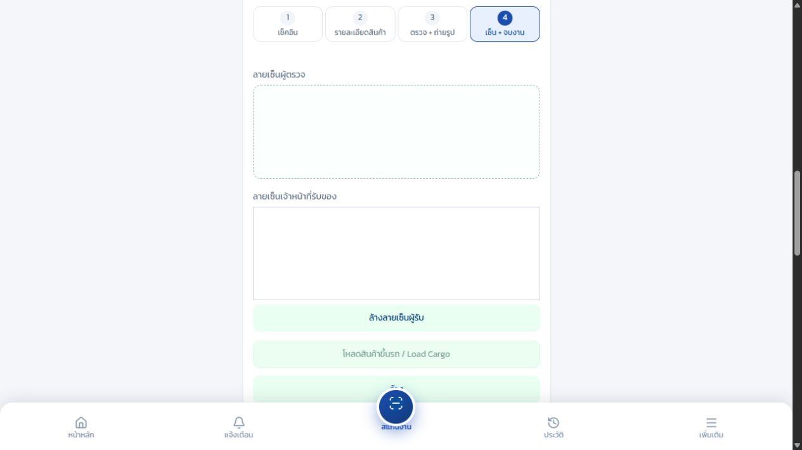
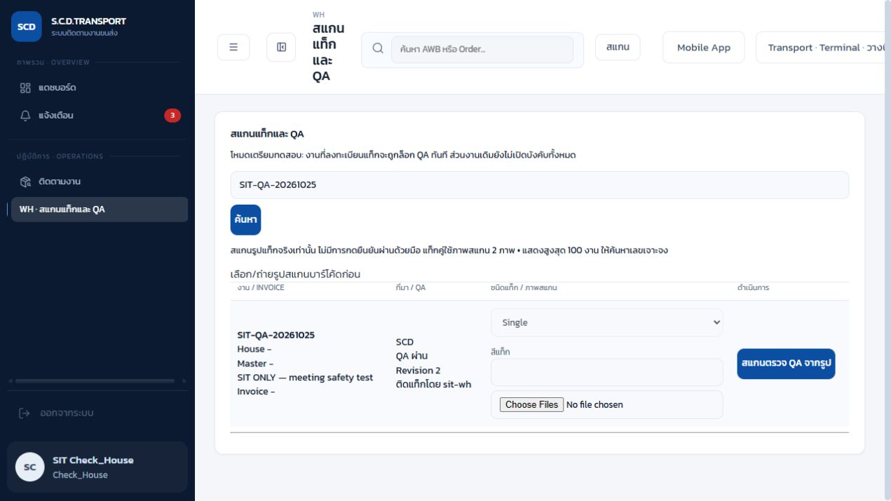
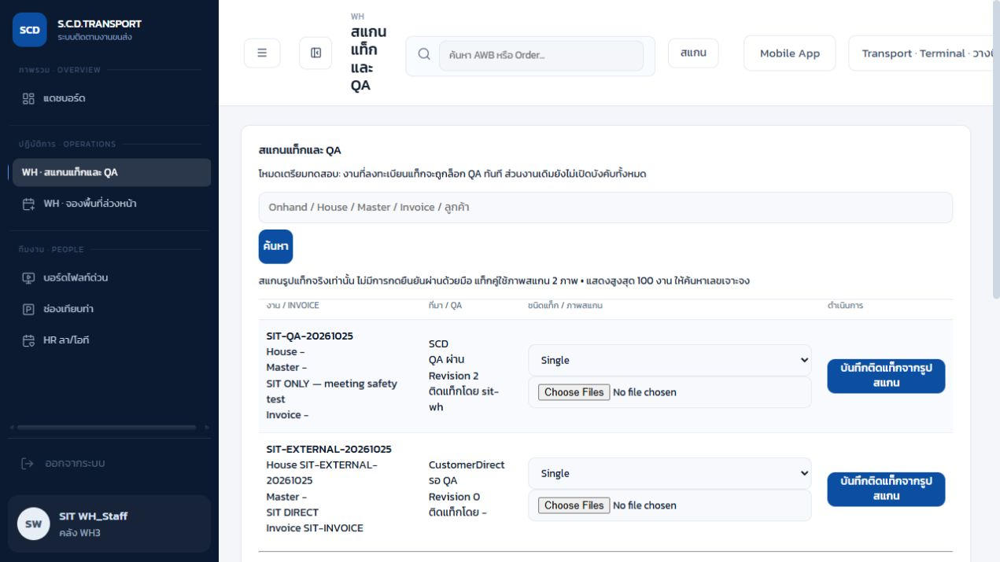
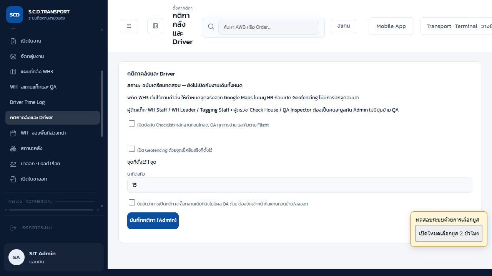
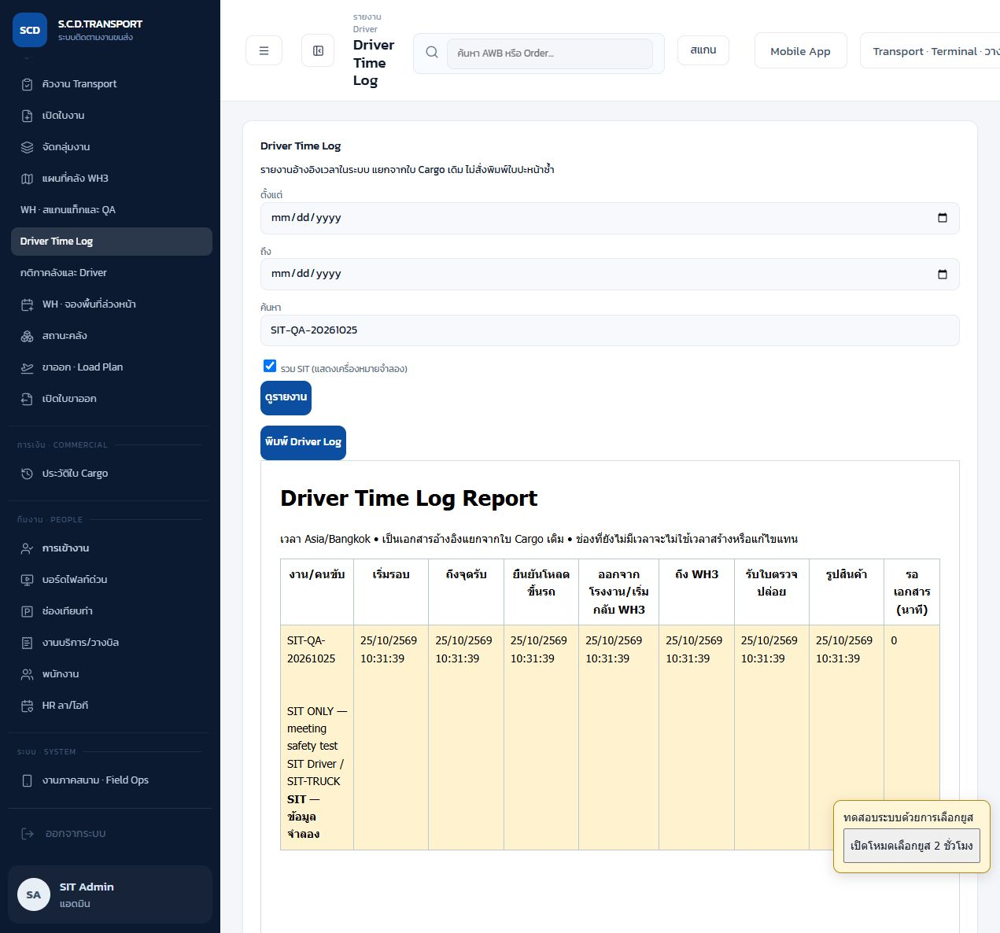

SCD Logistics — ข้อกำหนดใหม่และผลทดสอบ SIT
วันที่ 25 ตุลาคม 2026 • สาขา feature/meeting-safety-20261025 • ขอบเขตตามข้อกำหนดการประชุมที่ผู้ใช้ส่งและคำสั่ง “ส่วนอื่น ๆ จัดการเลย”
สถานะส่งมอบ: พัฒนาและทดสอบในเครื่องแล้ว ยังไม่ deploy ระบบจริง
พิกัดและรัศมี WH3 จริงเว้นไว้ รอ Google Maps จากผู้ใช้ ไม่มีการนำพิกัดสมมติไปตั้งเป็น WH3 จริง ไม่มีการแก้ข้อมูล House จริงหรือส่งข้อความถึงคนขับจริงในรอบนี้
1. ขอบเขตที่พัฒนา
| ข้อ | หัวข้อ | พฤติกรรมที่ได้ |
|---|
| 1 | Driver Check-in และ Geofencing | ต้องมีการเช็กอินวันเดียวกันและยังไม่เช็กเอาท์ก่อนเริ่มรอบ คนขับต้องใช้ยูสตนเอง ตั้งค่าสวิตช์ Geofencing แยกไว้ พิกัด WH3 จริงยังไม่กำหนด |
| 2 | ค้นหาใบงานบนมือถือ | ค้นหา House / Onhand / Master / รหัสงาน / ลูกค้า งานที่กำลังกรอกยังคงเลือกไว้เพื่อไม่ล้างแบบฟอร์ม และระบุว่ากำลังเลือกอยู่ |
| 3 | Checklist + รูป 3 หมวด + ลายเซ็น 2 ฝ่าย | ก่อนโหลดต้องครบ Checklist 10 รายการ รูปสินค้า/ฉลาก ใบ Cargo ลงชื่อ และท้ายรถ พร้อมชื่อและลายเซ็นผู้ตรวจกับผู้รับที่แยกกัน ล็อกทั้งปุ่มและ API |
| 4 | รับใบตรวจปล่อยและ Time Stamp | ถึง WH3 แล้วต้องแนบเอกสารก่อนยืนยันรับ ระบบเก็บไฟล์และเวลาเซิร์ฟเวอร์ เริ่มรอเอกสารจากเวลาถึง WH3 |
| 5 | แยกผู้ติดแท็กและ QA สแกนบาร์โค้ด | WH Staff / WH Leader / Tagging Staff ลงทะเบียนแท็ก ส่วน Check House / QA Inspector ตรวจผ่านภาพบาร์โค้ดที่เซิร์ฟเวอร์อ่านจริง ห้ามคนเดียวกันและไม่มีอนุมัติด้วยมือ |
| 6 | Hard Lock ห้ามย้ายก่อน QA | ครอบคลุมจัดเก็บ ย้ายช่อง ปล่อยช่อง หยิบ คืน โหลดและส่งออก ทั้ง Legacy และ Operations Control เมื่อเปลี่ยนแท็ก/สี/เลขอ้างอิง QA เดิมใช้ไม่ได้ |
| 7 | SCD / Customer Direct และจับคู่ Invoice | WH กรอก House และ Invoice ได้ งานใหม่ Customer Direct ต้องยืนยันถึงหน้าคลัง ชื่อลูกค้า จำนวน/หน่วยครบ ยังคงรอ EI/CS ไม่อนุมัติเอง กรณีมี Invoice อื่นระบบปฏิเสธการทับ |
| 8 | คิวและ Dock ตาม Flight | ใช้ค่ามาตรฐาน 15 นาทีต่อคิวที่อยู่ก่อนหน้าในประเภทเดียวกัน เรียง SCD ตามกำหนด Flight เร็วสุด D8–D11 รับเข้า D7 ลูกค้ามาส่งเอง ตรวจชนิดช่องและลำดับก่อนจ่ายช่อง |
| 9 | Driver Time Log Report | รายงานใหม่แสดงเวลาเริ่มรอบ ถึงจุดรับ โหลด ออกจากโรงงาน ถึง WH3 รับใบตรวจปล่อยและเวลารูปสินค้า แยก SIT ชัดเจน ไม่แก้ใบ Cargo เดิมและไม่พิมพ์ใบปะหน้าซ้ำ |
2. ผลตรวจและความหมายของหลักฐาน
243 automated tests ผ่านทั้งหมด • TypeScript ผ่าน • Next.js production build ผ่าน • HTTP SIT 49 รายการผ่าน
Lint โค้ดเซิร์ฟเวอร์ใหม่ผ่าน ส่วน lint ทั้งโครงการยังมีข้อผิดพลาดเดิม 4 จุดและคำเตือนเดิม 3 จุดในไฟล์ที่ไม่ได้แก้ในงานนี้ จึงไม่ได้ระบุว่า lint ทั้งโครงการผ่าน
HTTP ชุดหลัก 39 รายการทำงานกับ Next.js ที่ localhost:3100 และ Python scanner ที่ localhost:5001 บนฐานข้อมูลแยก .sit-meeting/20261025-A3 ตั้งแต่เริ่มงานจนเก็บ 5 CTN ในช่อง SITQA-01 พร้อมทดสอบผิดเงื่อนไข แท็กคู่เพิ่ม 10 รายการรวมการเข้าสู่ระบบและอ่านผลกลับ ภาพ Code128 ถูกถอดรหัสจริงโดย Python ไม่ใช้เลขที่พิมพ์ส่งจากเบราว์เซอร์เป็นผล QA
ข้อมูลจำลอง: ชุด SIT-QA-20261025, SIT-PAIR-20261025, SIT-EXTERNAL-20261025 และ SIT-UI-20261025 ทั้งลูกค้า สินค้า รถ ลายเซ็น เอกสารและพิกัดล้วนจำลอง รูปหน้าจอเป็นภาพจากแอปที่รันจริงในเครื่อง แต่ไม่ใช่ภาพการปฏิบัติงานจริงที่คลัง เวลาใน Log เป็นเวลาที่ API บันทึกระหว่างรัน SIT ไม่ใช่เวลาขนส่งจริง การทดสอบอัตโนมัติทำหลายขั้นในวินาทีเดียว จึงแสดงเวลารอ 0 นาทีได้ ห้ามใช้ประเมิน KPI หน้างาน
ยังไม่ได้ทดสอบ: GPS และกล้องบนมือถือจริง ณ WH3, การสแกนสติ๊กเกอร์จริงในสภาพแสงคลัง, ประสิทธิภาพบนข้อมูลจริง และการ deploy Next.js/Python บน Render ทั้งสองส่วนในรอบนี้ ผล 49 รายการเป็นระดับ HTTP ไม่ใช่การกดจบทุกขั้นผ่านกล้องมือถือ
3. สิทธิ์ที่ใช้
| ผู้ใช้/บทบาท | ทำได้ | ข้อจำกัด |
|---|
| Driver | เช็กอิน เริ่มรอบ ทำ Checklist แนบรูป ลงลายเซ็น รับใบตรวจปล่อย ดู Log งานตนเอง | เริ่มรอบแทนยูสอื่นไม่ได้ เข้าคิวเฉพาะงานตนเองที่ถึง WH3 แล้ว |
| WH_Staff / WH3_TeamLeader / Tagging_Staff | ลงทะเบียนแท็ก Single/Pair และสีผ่านรูปสแกน | ห้ามอนุมัติ QA แม้เคยติดแท็กแล้วเปลี่ยนบทบาท ก็ห้ามตรวจงานตนเอง |
| Check_House / QA_Inspector | สแกนรูปตรวจ QA ใหม่ | ห้ามใช้รูปเดิมของผู้ติดแท็ก ห้ามใช้ approved=true หรือพิมพ์บาร์โค้ดเพื่อผ่าน |
| WH_Staff / WH3_TeamLeader / Admin | จับคู่ House ↔ Invoice และรับรายการ Customer Direct หน้าคลัง | Invoice ขัดกันไม่ทับอัตโนมัติ งานใหม่ยังรอ EI/CS |
| Admin | ตั้งกติกาและเปิดใช้งานรวม | ไม่มีสิทธิ์ข้าม QA โดยอนุมัติแทนผู้ตรวจ การเปิดรวมต้องยอมรับผลต่องานเดิม |
ใช้บทบาทเดิมของระบบ ไม่มีการสร้างบัญชีจริงหรือเปลี่ยนรหัสผ่านจริงในรอบนี้ ยูส sit-admin / sit-driver / sit-wh / sit-qa อยู่เฉพาะฐาน SIT
4. วิธีทดสอบ Demo ทีละขั้น
- เตรียมสภาพแวดล้อม: ใช้ฐาน SIT แยกเท่านั้น ตั้ง DATA_DIR และ STORAGE_DIR ไปยังโฟลเดอร์ SIT เคลียร์ SUPABASE_URL และ SUPABASE_SERVICE_ROLE_KEY ในโปรเซสทดสอบ เปิด Python พอร์ต 5001 และตั้ง SCAN_SERVICE_URL เป็น http://127.0.0.1:5001/scan เปิด Next.js พอร์ต 3100 ห้ามใช้คำสั่ง fixture ทับฐานที่มีอยู่
- เปิดกติกา: Admin → กติกาคลังและ Driver → เปิดบังคับกติกา → ยอมรับผลต่องานเดิม → บันทึก การ Demo Geofencing ใช้จุดที่ระบุชื่อ SIT ONLY synthetic geofence, NOT WH3 ในฐาน SIT เท่านั้น ในระบบจริงรอพิกัดผู้ใช้ก่อนเปิดสวิตช์ Geofencing
- Driver: เข้าระบบด้วยยูสคนขับของงาน → เช็กอิน → ค้นหาใบงานด้วยเลขหรือลูกค้า → เลือกงาน → เริ่มรอบ → ถึงจุดรับ กรณียังไม่เช็กอินหรือเช็กเอาท์แล้วต้องเริ่มรอบไม่ได้ เมื่อเปิด Geofencing จุดนอกวงต้องถูกปฏิเสธ
- ก่อนโหลด: กรอกข้อมูลสินค้า/จำนวนตามจริง ตรวจวันที่ ลูกค้า House ประเภทสินค้า/พิเศษและ Checklist ให้ครบ แนบรูปสินค้า/ฉลาก ใบ Cargo ลงชื่อ ท้ายรถ กรอกชื่อผู้ตรวจและผู้รับ ลงลายเซ็นทั้งสองช่อง ถ้ายังขาดรายการใด ปุ่มโหลดและยืนยันรับต้องล็อก API ส่งข้อมูลไม่ครบต้องตอบ 422
- กลับ WH3: ยืนยันโหลด → ยืนยันรับ → ถึง WH3 → แนบใบตรวจปล่อย → ยืนยันรับใบตรวจปล่อย ตรวจว่ามีไฟล์และเวลารับเอกสารใน Timeline ใช้เวลาถึงคลังเป็นจุดเริ่มรอ ห้ามกดผ่าน Console เพื่อข้ามข้อบังคับรูปและลายเซ็น
- WH รับเข้า: ตรวจเอกสาร → เปิดรับ → ยืนยัน House → บันทึกยอดรับจริง การจัดเก็บก่อน QA ต้องแจ้ง “ไม่อนุญาตให้ย้ายของจนกว่า QA จะอนุมัติ” และไม่เปลี่ยนช่องหรือยอดคงเหลือ
- ติดแท็ก: WH Staff → WH · สแกนแท็กและ QA → ค้นหา House → เลือก Single/Pair → ระบุสีแท็กถ้ามี → ถ่าย/เลือกภาพสแกนแท็ก 1 หรือ 2 ภาพตามชนิด → บันทึก ต้องเห็น revision และผู้ติดแท็ก แท็กคู่ห้ามใช้ภาพไฟล์เดียวซ้ำ
- QA: ออกจากผู้ติดแท็ก → เข้าผู้ตรวจคนละยูส → ค้นหา House เดิม → ถ่ายภาพสแกนตรวจใหม่ 1/2 ภาพ → สแกนตรวจ QA จากรูป ต้องเห็น “QA ผ่าน” ปัจจุบัน ถ้าบาร์โค้ดผิด House หลายเลขปะปน รูปเดิมของผู้ติดแท็ก หรือ revision เปลี่ยน ต้องไม่ผ่าน
- จัดเก็บและย้าย: กลับ WH → จัดเก็บด้วยชนิด/สีแท็กที่ QA ตรวจแล้ว → ต้องสำเร็จ เปลี่ยนแท็กใหม่ → ต้องเปลี่ยนเป็นรอ QA และย้ายต่อไม่ได้จนกว่าจะตรวจใหม่ ห้ามใช้ข้อยกเว้น Admin ข้าม
- ลูกค้ามาส่งเอง: WH → ฟอร์ม House ↔ Invoice → Customer Direct → กรอกลูกค้า จำนวน หน่วย ยืนยันถึงหน้าคลัง → บันทึก ต้องเป็น CustomerDirect และยังรอ EI/CS หาก House เดิมมี Invoice ต่างกัน ต้องหยุดให้ตรวจ ไม่มีการทับ
- คิว: ตรวจ SCD ได้ D8–D11 และ Customer Direct ได้ D7 งาน Flight ด่วนอยู่ก่อนงานช้าประเภทเดียวกัน มี 3 งานก่อนหน้าต้องประมาณ 45 นาที เป็นค่าประมาณ ไม่ใช่เวลารอจริงที่บันทึกแล้ว
- รายงาน: Driver Time Log → เลือกวัน/คำค้น → ติ๊ก “รวม SIT” เฉพาะตอนทดสอบ → ดูรายงาน ตรวจชื่อรถ/คนขับและเวลาแต่ละขั้น ช่องที่ไม่เคยบันทึกต้องระบุยังไม่มีเวลา ห้ามใช้ createdAt/updatedAt แทน ปุ่มพิมพ์เป็นรายงานใหม่ ไม่สั่ง Cargo เดิมซ้ำ
5. หน้าจอจริงจาก SIT

Driver: ช่องลายเซ็นแยกผู้ตรวจ/ผู้รับ ขณะหลักฐานไม่ครบ ปุ่มโหลดและยืนยันรับถูกล็อก ภาพจาก localhost ไม่ใช่งานจริง

QA: บัญชีผู้ตรวจแสดงเฉพาะการสแกนตรวจ ไม่มีปุ่มติดแท็กหรือรับ Invoice และไม่เลือกภาพจะไม่ผ่าน ภาพหน้าจอชุดแรก A1 ก่อนรันยืนยัน API ชุดสุดท้าย A3

ผู้ติดแท็ก: ใช้ยูส WH Staff แยกจาก QA ภาพเก็บก่อนเพิ่มช่องสีแท็กในรอบสุดท้าย ช่องสีมีแล้วในโค้ดและทดสอบ A3

หน้าตั้งค่า: ค่าเริ่มต้นเป็นโหมดเตรียมทดสอบ จุด 1 จุดในภาพเป็นจุดสมมติของฐาน SIT เท่านั้น ไม่ใช่พิกัด WH3 จริง

รายงานเวลาใหม่จากบันทึก SIT พร้อมเครื่องหมายข้อมูลจำลอง และปุ่มพิมพ์รายงานอ้างอิงแยกจาก Cargo
6. ก่อนเปิดระบบจริงและข้อจำกัดที่ต้องทราบ
- ยังไม่ deploy: ผลรอบนี้เป็น feature branch สำหรับ Demo ไม่มีการ push ขึ้น main หรือเปิดกติกากับงานจริง การจองพื้นที่ยังอยู่ใน WH ตามการแก้รอบก่อน
- ต้อง deploy ทั้งสอง runtime: Python ต้องมี zxing-cpp และตอบ strictBarcode=true เมื่อส่ง strict_barcode=true ก่อนเปิด QA ฝั่ง Next.js ถ้าบริการเก่ายังไม่รองรับหรือ scanner ล่ม ระบบต้องปฏิเสธ QA ไม่มีทางอนุมัติมือสำรอง
- พิกัด WH3: รอ Google Maps และรัศมีจริง จึงเปิด Geofencing ไม่ได้จนตั้งค่า HR ให้ครบ การปิด Geofencing ยังบังคับเช็กอินประจำวันก่อนเริ่มรอบได้
- งานเก่า: enabled เริ่มต้น false งานที่ยังไม่ลงทะเบียนแท็กคงพฤติกรรมเดิม การลงทะเบียนแท็กใดจะเปิด QA lock ให้เฉพาะงานนั้นทันที แม้สวิตช์รวมยังปิด การเปิด enabled=true จะล็อกงานเก่าทั้งหมดที่ยังไม่ QA ต้องเตรียมเจ้าหน้าที่สแกน ไม่ควรเปิดกลางรอบโดยไม่จัดการงานค้าง
- Console: เมื่อกติกาใหม่เปิด ขั้นเริ่มรอบ/ถึงจุดรับ/ปิดประตู/รับใบตรวจปล่อยผ่าน Operations Control ถูกปฏิเสธ ให้บันทึกใน Driver App เพื่อมีหลักฐานครบ การแจ้งทางโทรศัพท์เพียงอย่างเดียวใช้ข้ามไม่ได้
- โหลดแล้วปิดรับ: รอบนี้ทดสอบต่อเนื่องในหน้าเดิม หลังยืนยันโหลดไม่ควรรีเฟรชหรือปิดหน้า ก่อนยืนยันรับ ระบบผูก hash กับหลักฐานชุดที่ยืนยันโหลดและไม่ยอมให้เปลี่ยน ถ้ารีเฟรชต้องใช้หลักฐานเดิมครบชุด การกู้แบบฟอร์มหลังปิดหน้า/การทำงานออฟไลน์ข้ามขั้นยังไม่ได้รับรองใน SIT นี้
- ข้อจำกัดภาพสแกน: ตรวจว่าเป็นภาพและอ่านบาร์โค้ดตรงเลขจริง ไม่ใช่ OCR เดาหรือ approved flag การยืนยันว่าถ่ายจากสินค้ากายภาพ ณ เวลานั้นยังต้องอาศัยขั้นตอนหน้างานและ Demo มือถือจริง การใช้ไฟล์สองภาพไม่พิสูจน์โดยตัวมันเองว่ามีสินค้าสองแท็กกายภาพ
7. ผล HTTP แต่ละรายการ
| # | รายการ | HTTP ที่คาด/ได้ | ผล |
|---|
| 1 | Login sit-admin | 200 | PASS |
| 2 | Login sit-driver | 200 | PASS |
| 3 | Login sit-wh | 200 | PASS |
| 4 | Login sit-qa | 200 | PASS |
| 5 | Enable safety for isolated SIT only | 200 | PASS |
| 6 | Cannot start without attendance | 409 | PASS |
| 7 | Outside geofence blocked | 403 | PASS |
| 8 | Inside synthetic SIT geofence accepted | 200 | PASS |
| 9 | Route starts after attendance | 200 | PASS |
| 10 | Pickup GPS arrival | 200 | PASS |
| 11 | No photos/signatures blocks load | 422 | PASS |
| 12 | Full evidence permits load | 200 | PASS |
| 13 | Read files after load | 200 | PASS |
| 14 | Complete preserves recorded evidence | 200 | PASS |
| 15 | Arrive WH3 | 200 | PASS |
| 16 | No release-document image blocked | 422 | PASS |
| 17 | Release document image and timestamp | 200 | PASS |
| 18 | Inbound document check | 200 | PASS |
| 19 | Open inbound | 200 | PASS |
| 20 | Identify House | 200 | PASS |
| 21 | Confirm isolated receipt 5 CTN | 200 | PASS |
| 22 | Create isolated SIT location | 200 | PASS |
| 23 | Putaway blocked before QA | 409 | PASS |
| 24 | Manual approval cannot bypass scanner | 422 | PASS |
| 25 | Actual Code128 image registers tag | 200 | PASS |
| 26 | Tagging role cannot approve QA | 403 | PASS |
| 27 | Wrong-House actual barcode refused | 422 | PASS |
| 28 | Independent actual image scan approves QA | 200 | PASS |
| 29 | Putaway permitted only after QA | 200 | PASS |
| 30 | Retag clears earlier QA | 200 | PASS |
| 31 | Move blocked after retag | 409 | PASS |
| 32 | New QA scan after retag | 200 | PASS |
| 33 | Move after current QA | 200 | PASS |
| 34 | Customer Direct House Invoice intake | 200 | PASS |
| 35 | Dock board separates Customer Direct | 200 | PASS |
| 36 | Driver Time Log readback | 200 | PASS |
| 37 | Driver cannot read another driver | 403 | PASS |
| 38 | Final SIT snapshot | 200 | PASS |
| 39 | Leave policy in review mode | 200 | PASS |
| 40 | Login sit-wh | 200 | PASS |
| 41 | Login sit-qa | 200 | PASS |
| 42 | Create separate synthetic Pair job | 200 | PASS |
| 43 | Pair refuses only one tag photo | 422 | PASS |
| 44 | Pair refuses reused identical photo | 422 | PASS |
| 45 | Pair registers two actual Code128 captures | 200 | PASS |
| 46 | Pair QA refuses only one capture | 422 | PASS |
| 47 | Pair QA refuses tagger original captures | 409 | PASS |
| 48 | Pair QA approves two independent captures | 200 | PASS |
| 49 | Pair current QA and color verified | 200 | PASS |
8. หลักฐานและไฟล์ที่เกี่ยวข้อง
ฐาน runtime / session / ไฟล์ลายเซ็นและรูปจำลองแยกอยู่ใน .sit-meeting และถูก gitignore ไม่รวมฐานข้อมูลทดสอบหรือ token ใน commit